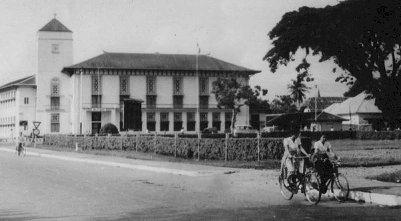

Sejarah
Kota Padang berasal dari kata Padang yang berarti tanah lapang. Daerah tersebut dinamakan Padang karena bentuk daerahnya yang berupa dataran rendah yang datar.
Kota metropolitan terbesar di Sumatra Barat, sekaligus menjadi ibukota Provinsi Sumatra Barat
Kota Padang berasal dari kata Padang yang berarti tanah lapang. Daerah tersebut dinamakan Padang karena bentuk daerahnya yang berupa dataran rendah yang datar.
Kota Padang berbentuk dataran rendah yang memiliki pantai di sebelah barat, serta perbukitan di sebelah timur.
Jembatan Siti Nurbaya adalah salah satu tempat ikonik di Kota Padang. Jembatan ini sudah ada semenjak zaman penjajahan Belanda. Jembatan Siti Nurbaya terletak di daerah Muara yang merupakan kota tua.